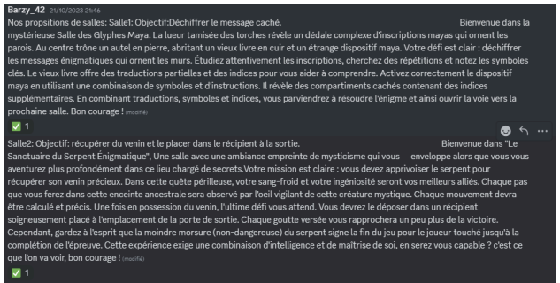
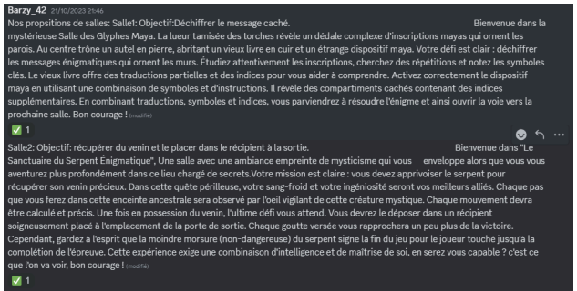
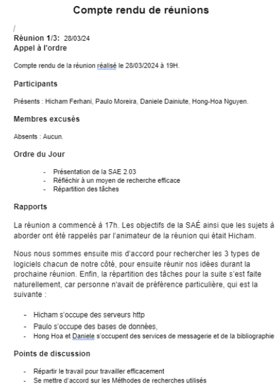
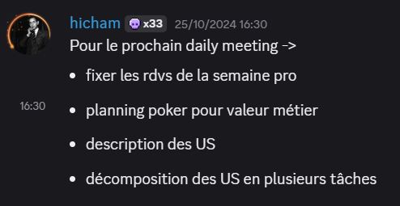
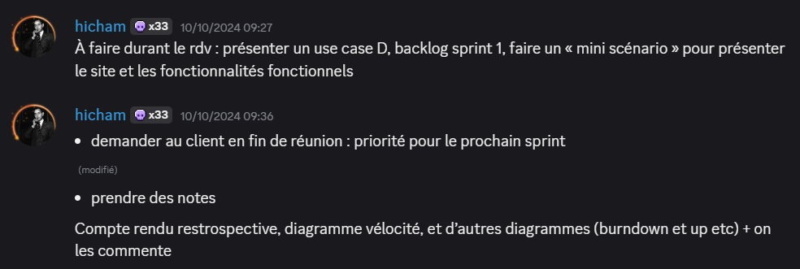
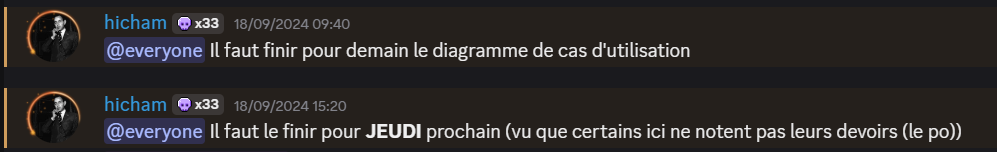
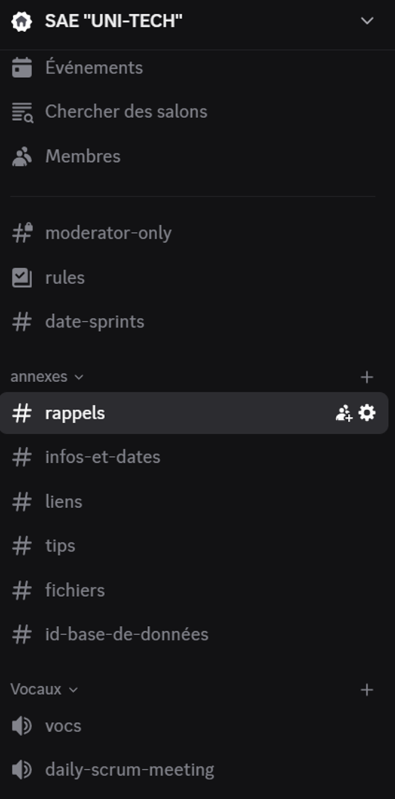
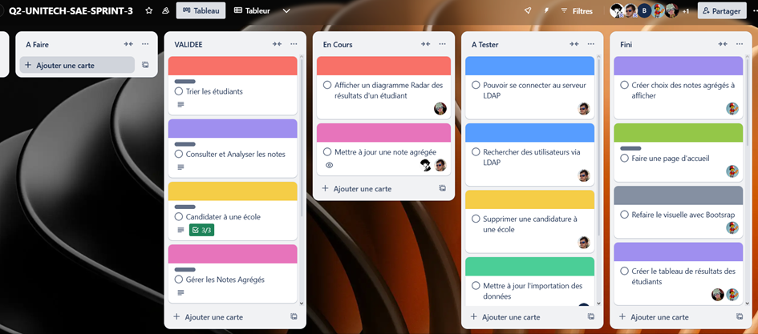

Compétence 5 : Conduire un projet
Au premier semestre, lors d’une SAE où l’objectif était de recueillir les besoins de clients pour coder un site web sur un escape game, nous avons, via Discord, contacté les supposés clients (un groupe qui nous était attribué) afin de connaître leurs exigences, ce qu’ils s’attendent à trouver sur ce site, etc. (AC1)
Trace 1 : Sur ces captures d'écran, nous avons reçu des critères ainsi que les images à utiliser. Nous avons également formulé des suggestions et des propositions qui ont été validées par le groupe d'étudiants. Cette situation est susceptible de se reproduire fréquemment lorsque nous intégrerons le monde professionnel et que nous travaillerons sur des projets en équipe. (AC1)
 

Au second semestre, nous avons appris les différentes règles de gestion de réunion (diriger une réunion, écrire des comptes rendus, comment réagir dans certaines situations, etc.) que nous avons appliquées lors de la SAE 2.03 (Guide d’installation pile LAMP et Linux). Nous avons réalisé 3 réunions ainsi que des comptes rendus en respectant les critères : désigner un animateur, définir les sujets, noter les décisions, planifier la prochaine réunion... J’ai dirigé une de ces réunions, préparé les sujets, géré le temps de parole, et sollicité les membres les plus discrets. (AC2)
Trace 2 : Compte rendu d’une réunion réalisée lors de la SAE que je dirigeais.
Au deuxième semestre, j’ai interviewé un développeur full stack dans le cadre d’un projet. L’entretien de 15 minutes a permis de réaliser une synthèse, une analyse, et une présentation orale sur le métier, les statuts, la rémunération, etc.
En deuxième année, nous avons découvert les méthodes agiles et cascade. Nous avons appliqué la méthodologie agile dans un projet en groupe de 5 personnes (scrum master, product owner, et développeurs). J’ai été scrum master lors du premier sprint. Mon rôle était donc de motiver l’équipe, organiser les daily meetings, et animer les rétrospectives pour discuter des axes d’amélioration. Durant les daily meetings, je demandais à chacun son avancement ou ses difficultés.
Trace 3 : Extrait d’une conversation au sein du groupe.
  Durant cette SAE (application web de gestion de poursuite d’étude), nous avons mis en place plusieurs outils de communication et de gestion de projet : un serveur Discord avec plusieurs salons par thème, un product backlog, et un Trello pour organiser les tâches à effectuer.
Trace 4 : Extrait de nos channels Discord
Trace 5 : Extrait de notre Trello
Pour conclure, j’estime avoir acquis cette compétence car je me sens à l’aise avec le travail en groupe, ainsi que tous les aspects liés à la gestion : organisation, direction de réunions, communication, etc.